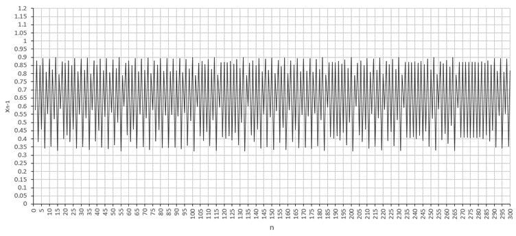

The investigation of chaos could be said to have begun to intensify through Edward Lorenz in
1963, after he noted that a meteorological model could be incredibly sensitive to small
changes in initial conditions. The core of chaos theory came to be in the 1970s, after the
inception of the idea that pure chance was the reason for errors in measurements, not a
limitation in accuracy. The prediction of the unpredictable is what is known as “chaos theory”,
the study of the complex, the tiny variables that can create either large or small error in a
system. It assists in the understanding of many systems, many of which seem to be
deterministic. This article talks about what chaos theory is, how chaos is identified, and what it
can - and is - used for.
What is chaos theory?
Chaos can be described as a lack of order, of predictability. It is the smallest variable that
causes disorder, a random error.
The study of chaos in mathematics seems like a paradox at first glance; it is the study and
prediction of what seems to be completely random behaviour (Britannica, 2023). Chaos theory
itself is the combination of randomness: the unpredictability of a complicated world, and
deterministic systems: rendering what is complex to predictability (Bishop, 2008). “Chaos
theory is the study of patterns which can be present in seemingly random systems.” (Eklund,
2009)
In the past, it was believed that unpredictability in results were due to limitations in accuracy. In
the 1970s (Topaloglou, 2013), however, the idea that the differences in results were due to the
complexity, diversity, and chaos of conditions in nature were the cause of such inaccuracies.
How is chaos defined?
In order to define a system as ‘chaotic’ in chaos theory, it is said that (Eklund, 2009):
a) it needs to have sensitivity to initial conditions; and
b) it needs to be aperiodic; and
c) it needs to be deterministic.
A system having sensitivity to initial conditions is commonly described with the ‘butterfly effect’.
The system possesses an intrinsic unpredictability (Britannica, 2023). The measurements made
at a single given time do not allow for prediction of a future measurement (Cattani, 2017).
The system has to be aperiodic, or ‘nonlinear’, meaning that it doesn’t repeat its outputs in
regular intervals (Eklund, 2009). These systems can be described with non-linear differential
equations, but this does not stop them from being difficult to predict and calculate (Topaloglou,
2013). They have more than one unstable point (Bishop, 2008).
Something that is deterministic has an output that is determined by the input, as well as it’s
initial conditions. It will return the same results with every input. This is why chaos is usually
understood in the context of a dynamical system (Topaloglou, 2013), or a deterministic
mathematical model with time as the continuous or discrete variable (Bishop, 2008). The
system may be unpredictable, but it follows precise rules.
Where can chaos be found?
A chaotic system could be many things. It is shown in the flow of fluids, in biological functions,
in chemical reactions or even in the motion of groups and clusters of stars (Britannica, 2023).
But for the purposes of this explanation, a great way to display a chaotic system in population
dynamics.
The logistic map is a great way to describe population growth (B.L. Badger). It’s dynamic
equation (or quadratic recurrence equation) (Ahmad, 2021) is:
, where r is the ‘growth rate’, or ‘biotic potential’, and x0 is the initial proportional population
(0 to 1)
The logistic map was popularized by Robert May (B.L. Badger) in 1976 as a way of predicting
how populations grow and shrink over time. It was earlier suggested by John von Neumann in
the late 1940s that it may act as a random number generator (Weisstein). More detailed studies
were performed in the 1950s over the properties of the map were beyond that of simple
oscillatory behaviour (Ahmad, 2021).
The logistic map’s contents change to a large degree depending on growth rate and initial
conditions. For example, if we choose to have a small value of r, the population will tend
towards 0 (r = 0.6, x0=0.8):
Figure 1
If we increase the r value, the population begins to stabilise (r = 1.5, x0=0.8):
Figure 2
We can see the population begin to fluctuate, but still stabilise (r = 2.9, x0=0.8):
Figure 3
What we can define as chaos is introduced around ‘r’ values higher than 3.5 (r = 3.6, x0=0.8):

Figure 4
Finally, at ‘r’ values of 4, we begin to see very extreme cases of chaos (r = 4.0, x0=0.8):
Figure 5
But how do we know that this is truly chaotic? As mentioned previously, for a system to be
defined as chaotic it needs to be sensitive to initial conditions, aperiodic and deterministic
(Eklund, 2009).
From figure 5, we can tell that it is aperiodic as it has no general trend.
It can also be said that the logistic equation is deterministic in that we are getting the same
results with the same conditions every time: the output is determined by the input.
Showing that it is sensitive to initial conditions is also possible, with the simple change of x0 to
0.8000001:
Figure 6
We can see that the map has changed significantly, so it can be said that the logistic map is
sensitive to initial conditions. Therefore, the logistic map can be an example of a chaotic
system.
Why do we study chaos theory?
The study of chaos theory can have many purposes. On top of population growth, the study of
nature – especially biology – has been greatly aided by the study of chaos. For example,
understanding chaos has allowed for a better understanding of irreversibility in dynamics,
which has further assisted in the understanding of evolution and modelling complex
phenomena (Conte, 2004).
Chaos has also been used in encryption (Lu, 2004) to alter statistical distribution. This involves
using a logistic map with ‘r’ values between 3.57 and 4 to compress images before continuing
with the encryption algorithm.
Conclusion
Chaos was first studied due to an accuracy deficit in research as a means to identify and predict
losses in accuracy. It has since had many uses in predicting many facets of nature (Conte,
2004), whether it be through fractals (Topaloglou, 2013) or through identifying key factors in
what is making a chaotic system, thereby being able to use it in processes such as encryption
(Conte, 2004). It has now made itself integral to many areas of research.